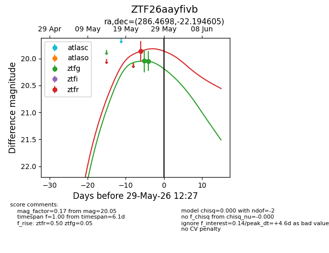
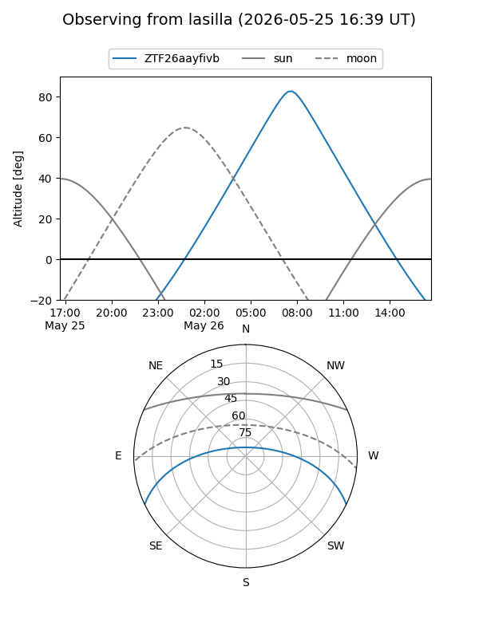
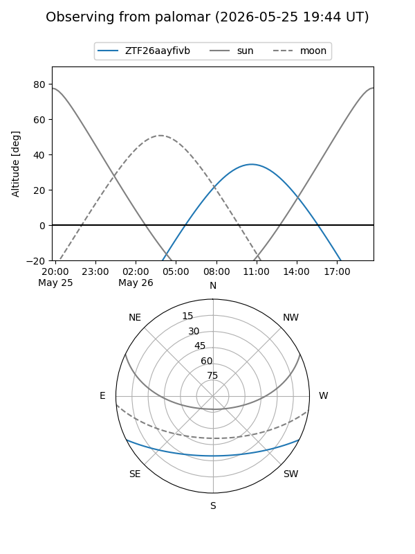
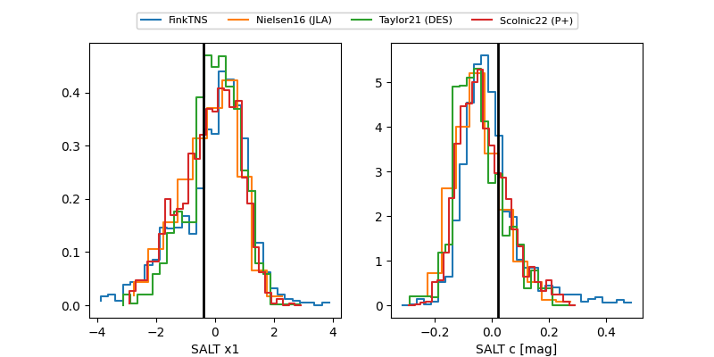

ZTF26aayfivb
Target ZTF26aayfivb at 2026-05-29 12:29
Aliases and brokers:
lsst-FINK: link
lsst-Lasair: link
lsst-ALeRCE: link
ztf-FINK: link
ztf-Lasair: link
ztf-ALeRCE: link
alt names
ZTF26aayfivb (ztf,fink_ztf)
Coordinates:
equatorial (ra, dec) = 286.4698,-22.19461
equatorial (HMS+DMS) = 19:05:52.76,-22:11:40.58
galactic (l, b) = (14.4084,-12.95232)
Flags:
Photometry:
last ztfg=20.05, ztfr=19.86
2 ztfg, 1 ztfr detections
Lightcurve

Visibility


Additional plots
